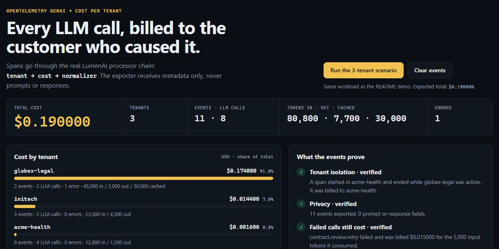
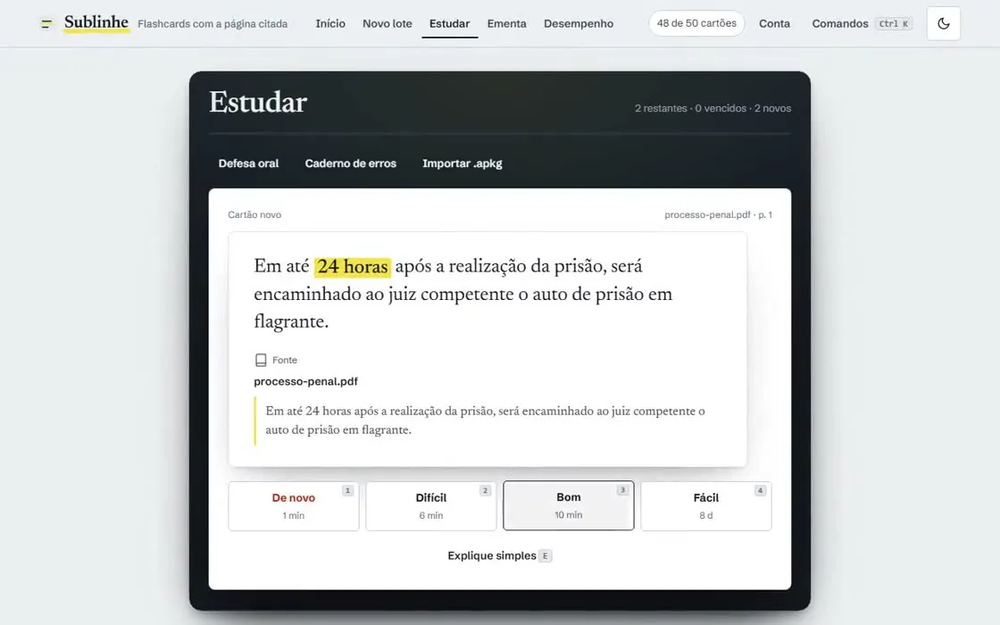
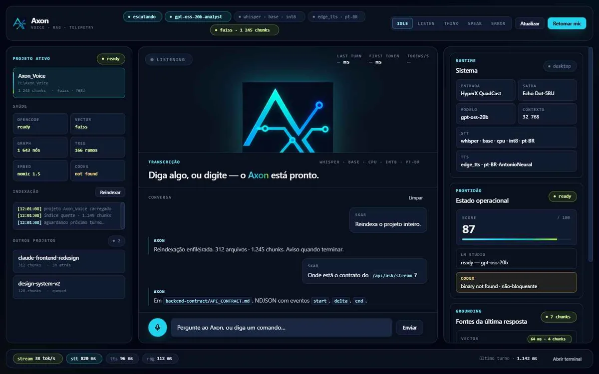
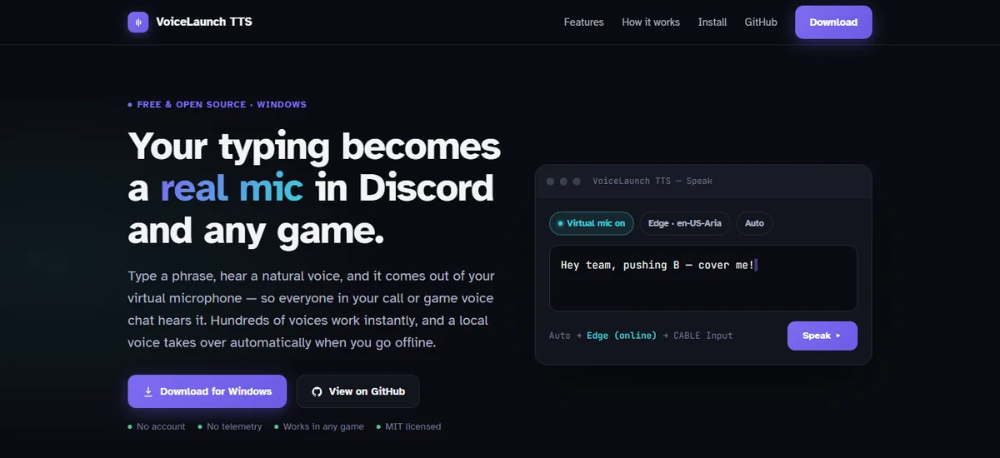

Desenho
Arquitetura, contratos e specs antes do código (OpenSpec, ADRs).
A-02.1 · o esquadro na planta
A-01Planta geral
Desenvolvedor de Soluções em IA
Desenho sistemas de IA e conduzo os agentes que escrevem o código. Meu trabalho é a arquitetura, os limites e as provas: testes, métricas e custo.
A-02Método
Vibe-coding com disciplina de engenharia. Eu desenho o sistema e fixo os limites, uma frota de agentes escreve o código e nada entra sem prova.
Arquitetura, contratos e specs antes do código (OpenSpec, ADRs).
A-02.1 · o esquadro na planta
Uma frota de agentes escreve o código em paralelo. Tenho um orquestrador próprio que roda Claude Code, Codex, Gemini e Cursor Agent como um runtime só.
A-02.2 · as quatro faixas laranja
Testes, release gates, evals e revisão de diff. Nada é “pronto” sem evidência.
A-02.3 · o portão que todo agente atravessa
Telemetria e custo por cliente em produção (é o que o LumenAI faz).
A-02.4 · ligado ao módulo M-01
A-03Projetos
Seis módulos na planta. Ao rolar, a frota de agentes ergue cada um; a altura do volume segue o log do número de commits.
Python · OpenTelemetry
Transforma traces de GenAI em custo por cliente, em dólar, exportando só metadados, nunca prompts.
Três processadores encadeados. Um span fica cobrado no tenant em que começou.

tenant globex-legal · claude-sonnet-4-6 · 40.000→2.000 tokens · cache 30.000 · US$ 0,159BGE-M3 · FAISS · BM25 · FastAPI · React · iOS
RAG de corpus fechado feito para estudantes da saúde, a área de onde eu venho. Transforma material de aula e provas antigas em flashcards, questões e treino oral, sempre citando a página.
Quando o material não sustenta a resposta, ele se abstém.

repositório privado · case na entrevista
Memória para agentes via MCP: PageRank personalizado sobre um store bitemporal.
Um firewall pré-execução inspeciona cada comando de shell que um agente propõe. A telemetria mostra só números que de fato mediu.
758 commits desde 13 set 2026
repositório privado · case na entrevista
Painel local, só leitura, que mostra o que um agente de código está fazendo sem gastar tokens de modelo (polling com ETag/304).
Zero dependências de runtime. Widget MCP para Claude, Codex e Antigravity.
Parceiro de trabalho por voz, local, que responde com fontes e aprende com você.
voz → Whisper → busca paralela (memória vetorial · base de conhecimento · grafo Neo4j) com fusão RRF → LLM local (Ollama) ou na nuvem → voz frase a frase
Cita a página exata ou diz que não sabe (RAG corretivo com LangGraph). Guarda o que você afirma num grafo de conhecimento com datas. Um orbe sempre visível: segure o Ctrl direito para falar de qualquer app.
1.622 testes · E2E com Playwright · nenhum teste chega à nuvem

repositório privado · case na entrevista
TypeScript · Electron · React · Python FastAPI
Transforma digitação em um microfone de verdade para Discord e jogos.
Edge TTS online, com fallback automático para Kokoro/Piper locais quando a rede cai. O microfone virtual (VB-Cable) vem junto.

165 testes Vitest · E2E com Playwright · recursos de acessibilidade
A-04Atividade
GitHub · 26 out 2025 → 27 out 2026
Planta-chave · calendário real, 53 semanas × 7 dias
Na planta 3D, cada dia vira uma pilha de blocos (1 bloco = até 5 contribuições) que os agentes empilham. Passe o cursor sobre uma pilha para ver o dia.
A-05Trajetória
Comecei na medicina. Hoje me preparo para o mercado de tecnologia construindo sistemas de IA de ponta a ponta: os agentes escrevem o código e eu respondo pela arquitetura e pelas provas. A faculdade de tecnologia vem a seguir.
Medicina, a área de onde eu venho.
lumen-ai-core publicado no PyPI.
Axon Voice fechado para uso local.
VoiceLaunch 1.3, primeiro release open source.
SynapseEngine começa.
Sublinhe, MVP fechado.
LumenAI SDK, revisão profunda: spans OpenInference cobrados, flush real, demo reproduzível e dashboard.
Axon Voice, nova versão: respostas com fontes, grafo de conhecimento e orbe sempre visível.
Faculdade de tecnologia e a primeira oportunidade no mercado.
A-06Contato
Brasil · aberto a primeiras oportunidades.